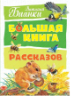

Мало кто умеет так точно и поэтично передать словом красоту родной природы, как это делал классик детской литературы Виталий Валентинович Бианки. Из своих научных наблюдений и охотничьего опыта он извлёк сокровенные тайны животного и растительного мира и поведал о них юным читателям. Волшебным ключом любви к природе он открыл сокровищницу чудес – тех, что всегда находятся непосредственно рядом с человеком. Надо только уметь прочувствовать и разглядеть их! Рассказы В.В. Бианки удивительнейшим образом соединили в себе поэзию и точное знание. Они наделены невероятной лёгкостью, какой обладает только воздух в лесу. Именно поэтому, наверное, на протяжении многих лет произведения писателя любят читать взрослые и дети. Их проходят на уроках литературы в школе и читают для души дома в кругу семьи.